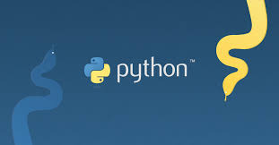

<!DOCTYPE html>

<html>


</html>


<head>
    <link rel="shortcut icon" href="Logo.png" type="image/x-icon"> 
    <title>Learn Python!</title>
</head>

<body>

   <hr>
    <h1>What is Python?</h1>
 <p>Python is a high-level, versatile, and widely-used programming language known for its readability and ease of use. It was created by Guido van Rossum and first released in 1991. Python's design philosophy emphasizes code readability and a clean, easy-to-understand syntax, which makes it an excellent choice for beginners and experienced developers alike.

    Here are some key characteristics and features of Python:
    
    Readable and Expressive: Python's syntax is designed to be easily readable, which means that the code is typically more understandable and maintainable than code written in many other programming languages. It uses indentation (whitespace) to define code blocks, which enforces a clean and consistent coding style.
    
    High-Level Language: Python is considered a high-level programming language, which means that it abstracts many low-level details of the computer's hardware, making it more accessible to programmers. This abstraction simplifies tasks like memory management and allows developers to focus on solving problems.
    
    Cross-Platform: Python is available on various operating systems (Windows, macOS, Linux) and can be used to develop software that runs on different platforms without modification.
    
    Interpreted Language: Python is an interpreted language, meaning that you don't need to compile your code before running it. You can write and run Python code directly, which simplifies the development process and aids in rapid prototyping.
    
    Large Standard Library: Python comes with a comprehensive standard library that provides ready-to-use modules and packages for a wide range of tasks, from file handling to web development to data analysis. This extensive library ecosystem makes it a powerful language for various applications.
    
    Dynamic Typing: Python is dynamically typed, which means that you don't need to declare variable types explicitly. The interpreter determines the data type of a variable at runtime. This flexibility can lead to more concise code.
    
    Support for Object-Oriented and Functional Programming: Python supports multiple programming paradigms, including object-oriented programming (OOP) and functional programming. This flexibility allows developers to choose the approach that best suits their project.
    
    Community and Ecosystem: Python has a vibrant and active community of developers. It is widely used in various fields, including web development (using frameworks like Django and Flask), data science (with libraries like NumPy, pandas, and scikit-learn), and artificial intelligence (with libraries like TensorFlow and PyTorch).
    
    Python's versatility and ease of learning have contributed to its popularity as a first programming language for beginners and as a tool of choice for professionals in a wide range of domains. It's commonly used for web development, scientific computing, data analysis, machine learning, and more.
    
    
    
    
    </p>
      
     <hr>
      <h1>1_Readable and Expressive: </h1>
      <p>Python's syntax is designed to be easily readable, which means that the code is typically more understandable and maintainable than code written in many other programming languages. It uses indentation (whitespace) to define code blocks, which enforces a clean and consistent coding style.

      </p>
      <hr>
      <h1>2_High-Level Language:</h1>
      <p>Python is considered a high-level programming language, which means that it abstracts many low-level details of the computer's hardware, making it more accessible to programmers. This abstraction simplifies tasks like memory management and allows developers to focus on solving problems.</p>
      
      <hr>
      <h1>3_Cross-Platform:</h1>
      <p>Python is available on various operating systems (Windows, macOS, Linux) and can be used to develop software that runs on different platforms without modification.

      </p>
      <hr>
      <h1>4_Interpreted Language:</h1>
      <p>Python is an interpreted language, meaning that you don't need to compile your code before running it. You can write and run Python code directly, which simplifies the development process and aids in rapid prototyping.</p>
      <hr>
      <h1>5_Large Standard Library: </h1>
      <p>Python comes with a comprehensive standard library that provides ready-to-use modules and packages for a wide range of tasks, from file handling to web development to data analysis. This extensive library ecosystem makes it a powerful language for various applications.</p>
      <hr>
      <h1>6_Dynamic Typing:</h1>
      <p>Python is dynamically typed, which means that you don't need to declare variable types explicitly. The interpreter determines the data type of a variable at runtime. This flexibility can lead to more concise code.</p>
      
     <hr>
      <h1>7_Support for Object-Oriented and Functional Programming: </h1>
      <p>Python supports multiple programming paradigms, including object-oriented programming (OOP) and functional programming. This flexibility allows developers to choose the approach that best suits their project.</p>
      <hr>
    <h1>8_Community and Ecosystem:</h1>
    <p>Python has a vibrant and active community of developers. It is widely used in various fields, including web development (using frameworks like Django and Flask), data science (with libraries like NumPy, pandas, and scikit-learn), and artificial intelligence (with libraries like TensorFlow and PyTorch).

        Python's versatility and ease of learning have contributed to its popularity as a first programming language for beginners and as a tool of choice for professionals in a wide range of domains. It's commonly used for web development, scientific computing, data analysis, machine learning, and more.
        
        
        
        
        </p>
        
</body>